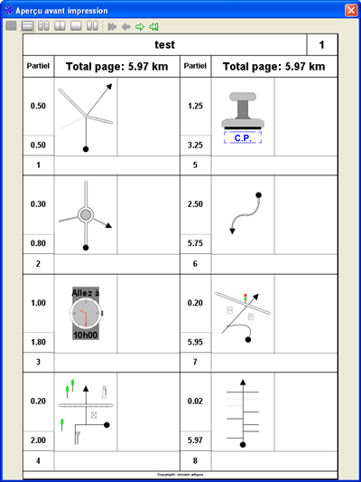

JvRoad
Manuel de référence
La boîte de dialogue: Aperçu avant impresion

Description générale
Cette boîte de dialogue affiche un aperçu du road book tel qu'il sera imprimé.
Les boutons
:
Pour indiquer que les cases sont dessinées sur deux colonnes à raison d'une page par feuille de papier.
:
Pour indiquer que les cases sont dessinées sur une seule colonne à raison d'une page par feuille de papier.
:
Pour indiquer que les cases sont dessinées sur une seule colonne à raison de deux pages par feuille de papier.
:
Pour indiquer que les cases sont dessinées sur deux colonnes avec une entête simplifiée à raison d'une page par feuille de papier.
:
Pour indiquer que les cases sont dessinées sur une seule colonne avec une entête simplifiée à raison d'une page par feuille de papier.
:
Pour indiquer que les cases sont dessinées sur une seule colonne avec une entête simplifiée à raison de deux pages par feuille de papier.
:
Pour visualiser la première page.
:
Pour visualiser la page précédente.
:
Pour visualiser la page suivante.
:
Pour visualiser la dernière page.